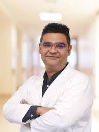
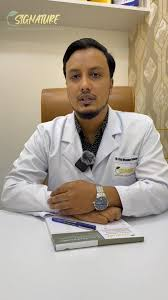
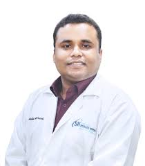

MBBS (AFMC), DDV (Thailand)
Fellowship Training in Laser & Cutaneous Surgery (Thailand)
Skin, Allergy, Hair, Nail, Sexual Diseases Specialist & Laser Surgeon
Chief Consultant, Dermatology & Venerology
Skinic Dermatology Centre, Mirpur
Skinic Dermatology Centre, Mirpur
Address: House # 733, Road # 11, Avenue # 4, Mirpur DOHS, Dhaka
Visisting Hours: 11am to 8pm (Sat, Mon & Wednesday), 3pm to 8pm (Sun & Thursday)
Appointment: +8801793256600
Praava Health, Banani
Address: Plot # 9, Road # 17, Block – C, Banani – 1213
Visisting Hours: 11am to 1pm (Sun, Tue & Thu), 3pm to 5pm (Friday)
Appointment: +8801844508402
Dr. Asif Imran Siddiqui, Chief Consultant at Skinic Dermatology Centre, is a highly esteemed dermatologist recognized for his expertise and dedication to patient care. Holding an MBBS from AFMC and advanced dermatology training from IOD Thailand, he has also gained international experience from India, Thailand, the Netherlands, France, Germany, and more. He is a Board Member of SAARC AAD, Treasurer of ADSB, and a faculty member at DDI. As an international speaker, researcher, and collaborator with pharmaceutical companies, he plays a vital role in advancing dermatology. His work in skin conditions, hair restoration, and cosmetic procedures reflects his commitment to excellence. He consults at Skinic Dermatology Centre, Mirpur (House # 733, Road # 11, Avenue # 4, Mirpur DOHS, Dhaka) and Praava Health, Banani (Plot # 9, Road # 17, Block – C, Banani – 1213), providing specialized dermatological care tailored to each patient’s needs.

MBBS (DU), DDV (Dhaka Medical College)
Trained in Laser, Aesthetics & Hair Transplantation
Dermatologist, Venereologist & Sexologist
Consultant, Department of Dermatology & Venereology
US Bangla Medical College Hospital
Signature Aesthetic & Laser Centre, Dhanmondi
Address: House-39/1, Lilyrin Tower, 7th Floor, Road-02, Dhanmondi, Dhaka
Visisting Hours: 3pm to 5pm (Everyday)
Appointment: +8801328058692
Dr. Kazi Iftekhar Rahman is a highly skilled dermatologist, venereologist, and sexologist in Dhaka with an MBBS from Dhaka University and DDV from Dhaka Medical College, also specially trained in laser, aesthetics, and hair transplantation. He is serving as a Consultant in the Department of Dermatology & Venereology at US Bangla Medical College Hospital and provides expert treatment for skin diseases, allergies, acne, psoriasis, eczema, vitiligo, fungal infections, venereal diseases, and sexual health problems. He also offers advanced cosmetic solutions such as laser treatment, aesthetic procedures, and hair transplantation at his chamber Signature Aesthetic & Laser Centre, Dhanmondi (House-39/1, Lilyrin Tower, 7th Floor, Road-02, Dhanmondi, Dhaka), where patients can visit him every day from 3 PM to 5 PM.

MBBS (DU), DDV (Dhaka Medical College)
Fellowship in Dermatology (USA)
Skin-VD, Allergy & Sexual Medicine Specialist
Hair Transplant & Laser Dermatosurgeon
Assistant Professor, Department of Dermatology & Venereology
Kumuduni Women's Medical College (KWMC)
Associate Consultant
Bangladesh Specialized Hospital PLC
SBangladesh Specialized Hospital
Address: 21, Mirpur Road, Shyamoli, Dhaka – 1207, Bangladesh
Visisting Hours: 10am to 2.30pm (Sat, Wed & Thu)
Appointment: 10633
Savar Prime Hospital
Address: A-89, Thana Road, Talbagh, Savar, Dhaka – 1340
Visisting Hours: 4pm to 7pm (Sat, Mon & Wed)
Appointment: +8801319164510
Dr. Abdullah Al Faisal is a skilled Skin, VD, Allergy, and Sexual Medicine Specialist in Dhaka and Savar. He completed his MBBS from Enam Medical College and achieved his Post Graduation in DDV from Bangladesh Medical University (BMU), followed by a Fellowship in Hair Transplant Surgery and Nail Surgery from India. He is currently serving as an Assistant Professor in the Department of Dermatology & Venereology at Kumudini Women’s Medical College (KWMC). Dr. Faisal provides specialized treatment for various skin diseases, skin allergies, hair and nail disorders, dermatosurgery including PRP therapy, hair transplant surgery, nail surgery, and sexual disorders. He regularly consults patients at Bangladesh Specialized Hospital PLC and Savar Prime Hospital.